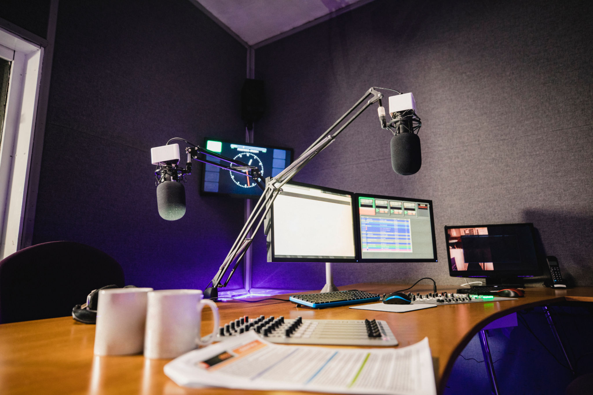

VOTRE BANDE ORIGINALE A CHAQUE INSTANT JBS RADIO
Nichée au cœur de votre école, JBS Radio est votre station de radio en ligne incontournable pour un mélange électrique de musique et de talk-shows captivants. Nous sommes fiers de proposer des listes de lecture qui répondent à des goûts variés tout en gardant nos auditeurs informés et divertis grâce à des discussions animées. JBS Radio a rencontré le monde du son à portée de main. Plongez dans une expérience audio fluide qui connecte les communautés et suscite des conversations.
AMELIOREZ L'EXPERIENCE DE VOTRE PUBLIC
Améliorez votre plaisir d'écoute avec les services de diffusion de premier ordre de JBS Radio, offrant une qualité audio supérieure et un contenu attrayant
SESSIONS DE DJ EN DIRECT
Découvrez des mix DJ dynamiques en direct réalisés par les meilleurs talents, apportant une énergie vibrante à votre journée.
ENTRETIEN EN DIRECT AVEC UN PROFESSEUR ET UN ETUDIANT
Nous menons des entretiens en direct avec des enseignants et des étudiants. Les auditeurs obtiennent un aperçu de l'éducation, des expériences et des perspectives directement auprès des personnes impliquées.
LISTES DE LECTURE DE MUSIQUE A THEME
Explorez des listes de lecture organisées conçues pour chaque humeur et chaque occasion, élaborées par nos experts en musique.
CHANSONS EN DIRECT
Profitez d'une diffusion en direct ininterrompue de vos chansons préférées. Notre web radio vous offre une expérience fluide avec divers genres musicaux, répondant aux goûts de chaque auditeur.
CLASSEMENT DE MUSIQUE HEBDOMADAIRES
Restez à jour avec les derniers succès grâce à nos classements musicaux hebdomadaires méticuleusement compilés.
EVENEMENT
Connectez-vous à des événements passionnants de n'importe où. Notre équipe d'experts diffuse de l'audio en direct, offrant aux auditeurs un accès en temps réel à divers événements en France.